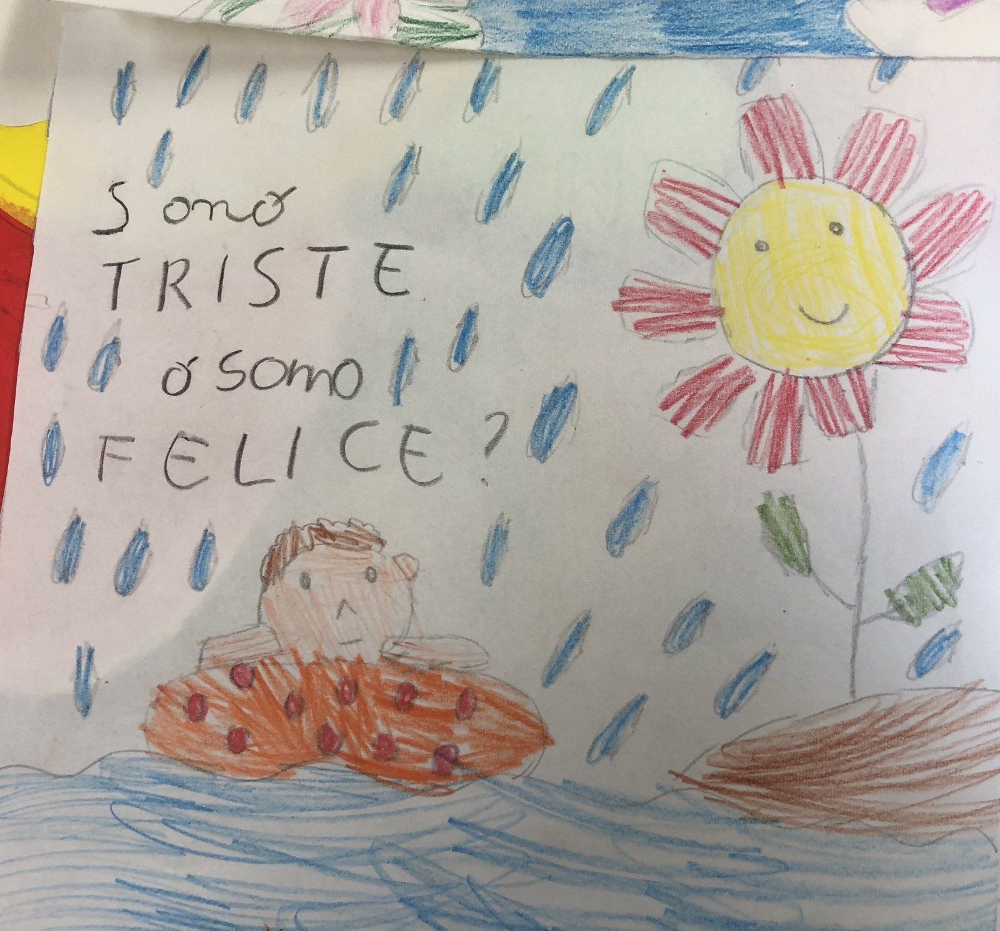

01
Progetti FSL
Le mie esperienze PCTO al liceo
Sito che ripercorre le due esperienze PCTO più formative ai fini del mio percorso all'interno del liceo Amaldi.
02
Le due esperienze
Ospedale Bolognini — Scuola materna Bruno Munari

Ospedale Bolognini
Cinque giorni all'interno della struttura sanitaria Bolognini di Seriate con lo scopo di conoscere meglio l'ambiente ospedaliero.
Esplora i dettagli dell'esperienza arrow_forward
Scuola Materna Bruno Munari
Cinque giorni all'interno dell'asilo Bruno Munari di Torre Boldone con lo scopo di capire se potesse essere un ambiente adatto al mio lavoro futuro.
Esplora i dettagli dell'esperienza arrow_forward